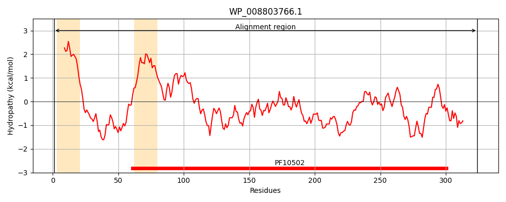
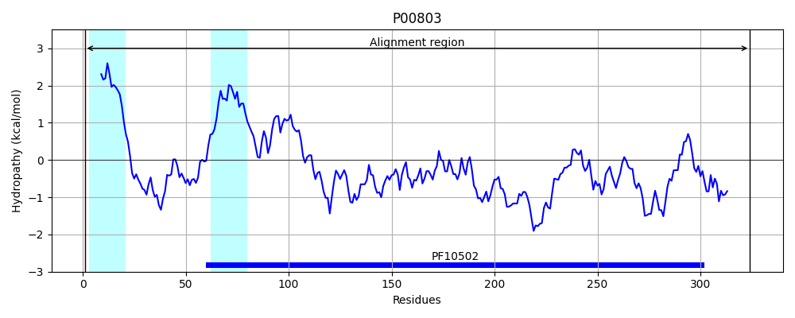
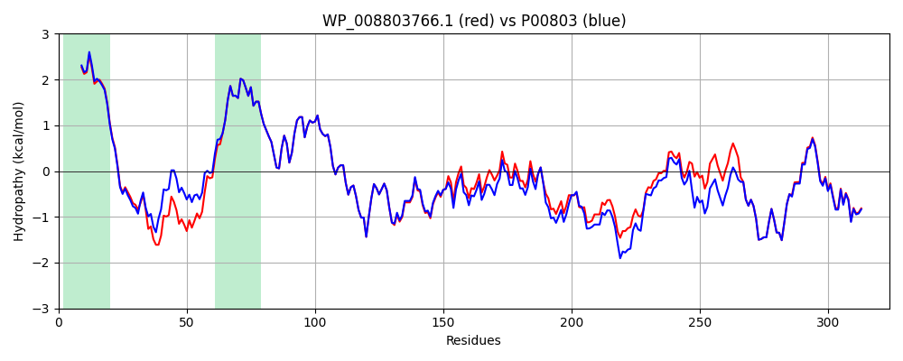

Hit Accession: P00803
Hit TCID: 9.B.391.1.3
Hit Description: gnl|BL_ORD_ID|8179 gnl|TC-DB|P00803|9.B.391.1.3 Signal peptidase I OS=Escherichia coli (strain K12) OX=83333 GN=lepB PE=1 SV=2
Mach Len: 324
e:0.000000
Query TMS Count : 2
Hit TMS Count: 2
TMS-Overlap Score: 1.900000
Predicted Substrates:CHEBI:14911;protein
BLAST Alignment:
Score: 1566 , Bit scores: 607 bits, E-value: 0.0e+00, Alignment length: 324, Percentage identity: 90
Query: 1 MANMFALILVIATLVTGLLWCLDKFIFAPKRRERQAAAQAATGEQLDKKTLKKVGPKPGWLETGASVFPVLAIVLIVRSFIYEPFQIPSGSMMPTLLIGDFILVEKFAYGIKDPIYQKTLIETGHPKRGDIVVFKYPEDPRLDYIKRAVGLPGDKVTYDPVAKQVTIQPGCSSGQACGNALPVTYSNVEPSDFVQTFSRSNGGEASSGFWQLPKGETKADGIRLTERQETLGDVTHRILMVPIAQDQVGMYYHQSGLPLATWIVPPGQYFMMGDNRDNSADSRYWGFVPEANLVGKATAIWMSFEKQEGEWPTGVRLSRIGGIH 324
MANMFALILVIATLVTG+LWC+DKF FAPKRRERQAAAQAA G+ LDK TLKKV PKPGWLETGASVFPVLAIVLIVRSFIYEPFQIPSGSMMPTLLIGDFILVEKFAYGIKDPIYQKTLIETGHPKRGDIVVFKYPEDP+LDYIKRAVGLPGDKVTYDPV+K++TIQPGCSSGQAC NALPVTYSNVEPSDFVQTFSR NGGEA+SGF+++PK ETK +GIRL+ER+ETLGDVTHRIL VPIAQDQVGMYY Q G LATWIVPPGQYFMMGDNRDNSADSRYWGFVPEANLVG+ATAIWMSF+KQEGEWPTG+RLSRIGGIH
Sbjct: 1 MANMFALILVIATLVTGILWCVDKFFFAPKRRERQAAAQAAAGDSLDKATLKKVAPKPGWLETGASVFPVLAIVLIVRSFIYEPFQIPSGSMMPTLLIGDFILVEKFAYGIKDPIYQKTLIETGHPKRGDIVVFKYPEDPKLDYIKRAVGLPGDKVTYDPVSKELTIQPGCSSGQACENALPVTYSNVEPSDFVQTFSRRNGGEATSGFFEVPKNETKENGIRLSERKETLGDVTHRILTVPIAQDQVGMYYQQPGQQLATWIVPPGQYFMMGDNRDNSADSRYWGFVPEANLVGRATAIWMSFDKQEGEWPTGLRLSRIGGIH 324 | Protein Hydropathy Plots: |
|---|
|  |  |
Pairwise Alignment-Hydropathy Plot:
|
|---|
|  |